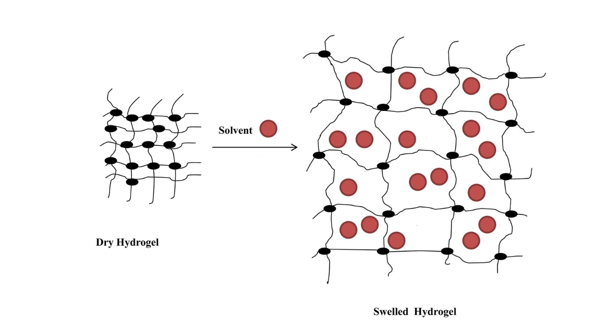

using Pkg
Pkg.add("DifferentialEquations")Background
One important factor of plant growth in water limited agrozones is resolved by adding hydrogels Montesano et al. (2015),El-Asmar et al. (2017). There have also been keen interest in soil water retention in presence of hydrogel Narjary et al. (2012),Abedi-Koupai, Sohrab, and Swarbrick (2008). Its prepartion detail is provided in some recent reviews e.g., Ahmed (2015). Some research related to hydrogel particle size on its water retention activity has also been cited Abdallah (2019).
Model based insights in hydrogel action

A simple phenomenology
The phenomenal model is based on experimental observation for describing the extensive polymer swelling : \[\begin{equation} \frac{t}{W}=A+Bt \label{eq:pheno} \end{equation}\] In equation (0.1) W is the water uptake at time t, B=\(\frac{1}{W_\infty}\).
Actually the equation (0.1) is solution to the second order kinetic model : \[\begin{equation} \frac{dW}{dt} = k_r (W_\infty − W)^2 \label{eq:2ndorder} \end{equation}\]
The retentivity is expressed by the constant \(k_r\) as given by \(k_r=\frac{1}{AW_\infty^2}\) While we can perform a time series, the estimation of \(k_r\) can provide us a simple estimate of water retentivity.
using DifferentialEquations,DiffEqProblemLibrary.ODEProblemLibrary,Plots
f(u,p,t) = 0.5*(u-1.5)^2
u0 = 1/2
tspan = (0.0,10.0)
prob = ODEProblem(f,u0,tspan)
sol = solve(prob)
plot(sol,linewidth=5,title="Water Uptake Kinetics r=0.5",
xaxis="Time (t)",yaxis="Water Mass")
f(u,p,t) = 0.9*(u-1.5)^2
u0 = 1/2
tspan = (0.0,10.0)
prob = ODEProblem(f,u0,tspan)
sol = solve(prob)
plot(sol,linewidth=5,title="Water Uptake Kinetics r=0.9",
xaxis="Time (t)",yaxis="Water Mass")
See https://diffeq.sciml.ai/stable/tutorials/ode_example/ and https://diffeq.sciml.ai/stable/tutorials/ode_example/ for Julia based ODE.
Power law Model
The power law model is a consequence of diffusion of water into the hydrogel. We can express the power law by: \[\begin{equation} M_t/M_\infty = kt^n \label{eq:powerlaw} \end{equation}\]
where \(M_t\) is the mass of water gained or lost at time t, \(N_\infty\) is the initial mass of water contained in the hydrogel, k is a constant and n is the diffusion exponent.
Important
Usually the mechanism of the water transport in the hydrogels may be characterized by the diffusion exponent n in the power law model.The two cases n = 0.5 and n = 1 are important. When n = 0.5, the water transport is controlled exclusively by the chemical potential gradient, little or no volume variation occurs during the transport